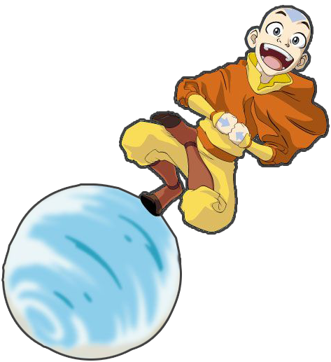

Gabriel Maljas

Game- and Webdeveloper
I'm a learning programmer from Heidelberg
Games
- Ocean's Silence
- Masks
- Ingredient Wars
Websites
- Nostal Games
- Portfolio
Masks
Description
Masks is a Action-/ Adventure Game developed for a two weeks schoolproject.
The game tells the story of a pirate who travels from island to island to find valuable treasures. But on this island she
discovers strange ghosts. These ghosts give her special abilities for her use.
Project task
The assignment on this project was to develop a game with the words "Island", "Ghost" and "Treasure".
This game had to be created in the Game-Engine Unity and with C#.
Part of my inspiration came from the movie "Spirited Away" .
The ghosts in my game Masks share similarities in their appearances since both the No-Face from the movie and the ghosts in my game have no distinct body and a mask as a face.
As i wanted to use the theme of "elementals", I found inspiration in the Nickelodeon series
"Avatar: The Last Airbender".
I searched for abilities i could use for my game. In the end I used the riding on a airball for my game.

Game-Trailer
Part of my inspiration came from the movie "Spirited Away" . The ghosts in my game Masks share similarities in their appearances since both the No-Face from the movie and the ghosts in my game have no distinct body and a mask as a face. As i wanted to use the theme of "elementals", I found inspiration in the Nickelodeon series "Avatar: The Last Airbender". I searched for abilities i could use for my game. In the end I used the riding on a airball for my game.
Design
Ghosts
With the help of the 3D-modelling tool Blender I built four elemantal ghosts and used them for my project.


Abilities
On every victory over a ghost the main character gains new abilities based on the type of ghost.
The left picture shows a ghost sitting in water waiting for a enemy to appear.
The right picture shows a burning ghost who embodies the element of fire.
Walls from the ground

Cloud to float

Code Snippets
Positioning of the camera based on position of two ankers
Ocean's Silence
Description
Ocean's Silence is my first project with the Game-Engine Unity . This project was programmed in C# and the objects you can see in the game are from the Unity-Assetstore.
Project task
This assignment had to be a horror-game in the ego-perspective and programmed in C#. The assignment was pretty open in terms of creativity in which direction the horror-game could be developed. Only two things had to be added to the game. One was a labrynth and the other a ruin.
Game-Trailer
Design
In this project I wanted to use the aquatic theme because I think the constant sound of water around you makes a really depressing feeling in your ears. These sounds were quiet but after some time too quiet. The silence of the ocean makes the scares even more intense.
The hidden ruin
At the start of the game the ruin is fully covered in the sand. The ruin will rise after you solve the riddles of the game. This ruin resembles a destroyed temple which hides more clues to the main character.

Steps
As this project was my first with Unity and I didn't have much experience with coding in it, I set my sight on the animations and soundeffects. This is where I created a spiraling steps which hides under the sand until you find a clue.

Labyrinth
Like the ruin the labyrinth is a hidden at the start of the game. It appears as soon the player is on top of the spiraling steps. A treasure is hidden in this labyrinth but is guarded by a monster.

Ingredient Wars
Description
Ingredient Wars is my first Project with the Open Source Implementation from Microsoft XNA 4 Framework MonoGame and was created with C#.
Project Task
The assignment to this project was to develop a game with the MonoGame Framework and a random assigned theme.
In this project i have gotten the theme "Secret Formula".
Since I am a big fan of the game series "Plants vs. Zombies" of the publisher EA,
I decided to use a similar game mechanic to that game.
To meet the theme of my assignment I created a concept with the idea: Food has enough and fights to protect the secret recipes from the cooks.
Game-Trailer
Design
Characters
The characters had be simple and funny looking. Like the coconut who protects itself with its hard shell.
I used a banana to let the enemies slip and fall for a brief moment.
The tomato is the main unit in my game since it provides constant damage to the enemies.
playing field
The design of the playing field resembles a kitchen. The floor are tiles which you can find in every professional kitchen.
With the transition from dark to light colors at the upper and bottom part of the tiles, the floor is looking shiny and clean.
At the top and bottom of the level are working field where you can select the food you want to fight for you.

Code Snippets
Instantiate a projectile
Finding a enemy target and instantiating a projectile
Code Snippets
Instantiate a projectile
Finding a enemy target and instantiating a projectile
Nostal Games
Description
Nostal Games is a website where you can find informations to various Retro-Games and play little parts of the game itself. This was my first webproject. This project was a partner project of two.
Project Task
In this assignment we had to build a website with the use of HTML and CSS. The website had to be kind of a library of Retro-Games.
Nostal Games had to provide information about the games and a forum for discussions.
To find the games even easier we had to make categories for each game genre.
Design
My project partner and I decided to use the old layout of the DOS for our website to get the perfect Retro-Look. Paired with the old games and the layout you can see what this website does and stands for.
Frontpage
At the top of the frontpage you can see the logo of the website. To get a fast and easy access to the most popular games the website shows them right on the frontpage.


Forum
This forum is a example how it could look like. It is possible to click on every post title to read the full post of the person.


Portfolio
JavaScript examples of this website
Navigationbar Code in the mobile version
With this JavaScript Code it is possible to add new navLinks dynamicly whithout having to change any code. The navLinks slide from right in the order of the index-value of each.

Sliding back and forth in the mobile version
If a project is selected in the mobile version it is possible swipe to go back to the project selection.
Here I looked at the moment the swipe was made by the user.
If a swipe to right is detected the window with the project slides back and deactivates it.

If a project is selected in the mobile version it is possible swipe to go back to the project selection.
Here I looked at the moment the swipe was made by the user.
If a swipe to right is detected the window with the project slides back and deactivates it.